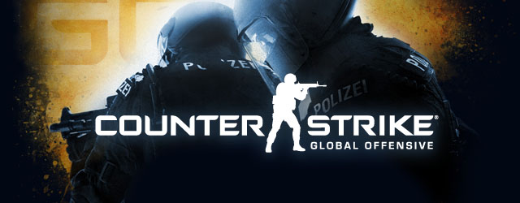

Popular Games

League of Legends
League of Legends is arguably the most popular title in the professional gaming circuit right now. The 2014 World Championships was the most viewed eSports event of the year. Its popularity largely stems from the game's sprawling player base. Recent figures are hard to come by, however. The last official stats from Riot Games, the developer of League, came in January 2014, with the studio revealing that 67 million gamers were playing the title each month. What's more, 27 million users play at least one game daily, and peak daily figures total around 7.5 million. Social gaming site Raptr claims League of Legends holds a 19.97% share of PC games played in January this year, which puts it in top spot for the world's most popular game.
Counter-Strike
The original Counter-Strike launched in 1999, and has been a staple of PC gaming ever since. This enduring popularity helped grow the game's competitive scene, with the original title now having awarded over $10 million in prize funding over 540 tournaments. Its sequel, Counter-Strike: Global Offensive, launched in 2012, has seen similar success, with competitions doling out over $4 million across 615 tournaments in just over just three years.
StarCraft II
The StarCraft series is one held in high esteem in the professional gaming world. The skill level required to play at the top end of StarCraft is considered exceptionally difficult to achieve. It's also important to note that South Korea has a huge stranglehold on StarCraft and StarCraft 2 in terms of eSports. Of the top 20 highest earning players for StarCraft 2, 19 are from South Korea. It's long been seen as the most popular game in the country, and many see it as the national sport.